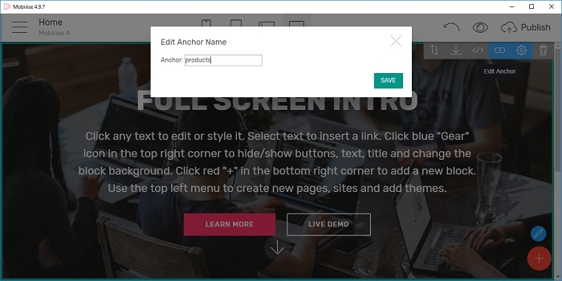

<p>Every block you add to your Mobirise page comes with a label, to which you can link. These labels are called 'anchors'. These anchors are generated automatically, which means you end up with headers like 'header2-3' that don't say anything about the content they're linking to. With this extension, you can edit these anchors and give them any name you prefer. After that, you simply link to this new anchor, resulting in pretty links like 'index.html#products'.</p>
